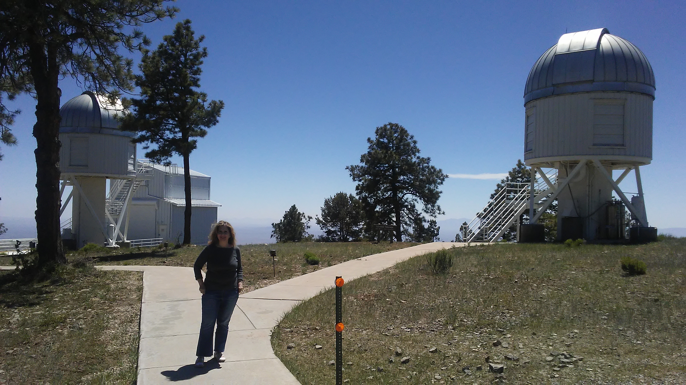

About Me

Education:
PhD (Astronomy): Georgia State University (USA)
Msc (Astronomy): York University (Canada)
Msc (Physics): University of Isfahan (Iran)
BSc (Physics): Isfahan University of Technology (Iran)
I am a postdoctoral researcher at the University of Kansas, working with Prof. Ian Crossfield. Pritor to reach this position, I had a long journey of research and teaching in both physics and astronomy.
I received my PhD in Astronomy from Georgia State University, supervised by Prof. Sebastien Lepine and received my master in Astronomy from York Univerisy, supervised by Prof.
Michael De Robertis. I started studying about the properties of cool dwarf stars just before my master program, which has been my major reserach interest since then. As a memeber of
Prof. Crossfield's Exolab team, I am searching for chemical connections between exoplanets and their host stars, which could provide fundamental insights into the formation of
planetary systems.
Research

Research Interests:
Physical parameters and chemical abunadances of cool dwarfs using low- and high-resolution spectrscopy
Motivation:
As the most abundant stars in the Milky Way, cool dwarfs (Teff <4700 K) offer an excellent tool to study the chemical enrichment history
of the Galaxy. In addition, the low mass and radius of these stars have led them as important targets for planet detection and
characterization, which provide ideal sites to probe the planet formation mechanisms. The characterization and chemical abundance measurements of cool dwarfs
are therefore of great importance in both Galactic and planetary astronomy. For my research, I have been devoloping spectral fitting techniques to determine the physical
parameters and elemental abundances of these small stars in both the optical and near infrared regions, using low- and medium-resolution spectra (observed from the MDM, Lick, Kitt-Peak National,
and Cerro-Tololo Interamerican Observatories) and high-resolution spectra (observed from ARCES/Apache Point Observatory and IGRINS/Gemini Observatory-South).
I also aim to automate these techniches to be performed in a timely manner.
Publications: Include ADS link!
Contact
Email:
nhejazi@ku.edu
nhejazi1@gsu.edu